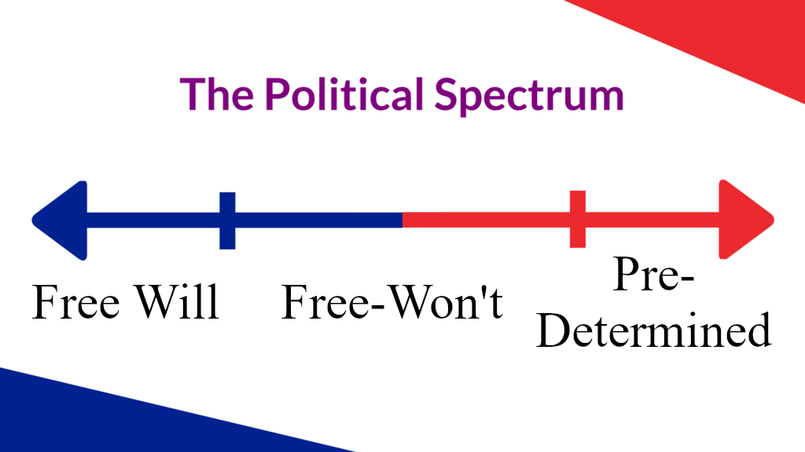
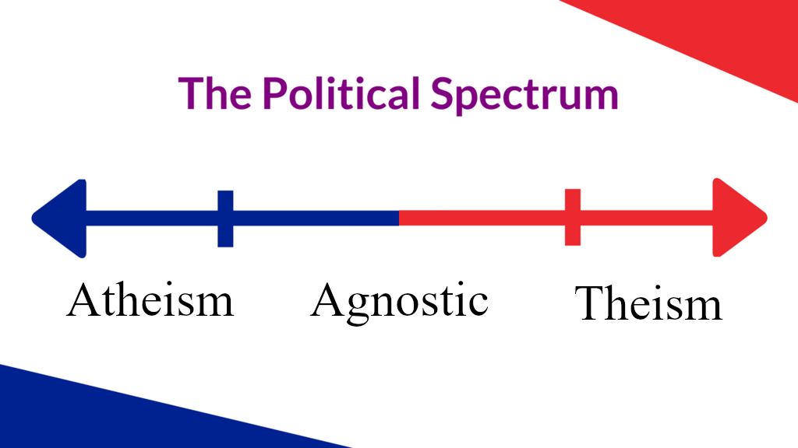

God is not real. Therefore, we should not wait for God to bring us salvation. We have to bring salvation unto ourselves. One day a prodigy will be born who will provide humanity with the technology to destroy the universe. By destroying the universe, we will finally stop suffering 6. It is not enough to destroy our own planet, there might be other animals suffering in the other galaxies. In the end of days there will be a holy war among those who wish to preserve the universe, and those who wish to destroy it. Que Darth Vader music.
So basically a long time ago, a philosopher said "Let's all agree to stop having babies, that way humans will go extinct, and everyone will stop suffering." This philosophy is called Antinatalism movement. But then, another philosopher said "But what about our pets?" So they said "Okay, we will blow up our whole entire planet Earth. Now all living species on Earth will stop suffering." So then they said "What about life on the other planets? Eventually life will re-evolve. And we are back to where we started". And so they said "Okay, we will blow up the whole entire universe."
Every political debate is always fundamentally about two things. Free Will & Religion. (ignore the red & blue colors)


To see how this plays out, you can read my short story.
https://JovannyR.com/obese.html
In this fictional universe, where obesity is illegal, the political debate is whether or not obesity is a choice, hence Free Will vs Pre-determined.
The best predeterminism evidence is Benjamin Libet's experiment.
https://youtu.be/lmI7NnMqwLQ?t=838
The 3 types of Wills are Free-Will, Free-Won't, and Predeterminism. I will try my best to explain the subtle differences.
Here are examples of each based on homosexuality. And simply replace "homosexuality" with anything such as "overeating, depression, laziness, criminality."
Free-Will: I made the educated decision to be straight. There is no such thing as a gay gene. Gay is a choice. If you are gay it's because you were raised in a gay household or you were influenced by gay propaganda in the media.
Free-Won't: I acknowledge there are biological mechanisms that makes certain humans more likely to do homosexual acts. As humans, we can't control our emotions, but we have complete control over our behavior. The human spirit allows us to veto the impulses of the human flesh, and so we control our own destiny.
Predeterminism: Life is like a book written in a language called Mathematics. Every character in this book of life believes they can alter certain events, but no matter what each character says, does, or believes, they are destined to behave exactly as the book is written. Think about your favorite movie, no matter how many times you watch it over and over, it always ends the same though each character remains oblivious. Whether you seemingly decide to be gay or not be gay, it is never your own choice. You are not the owner of your own thoughts, the universe is. Every particle in the universe is connected. A star exploding in another galaxy can influence your thoughts and behavior here on Earth 1.
People who believe in Free-Will often say things like "You are responsible for your own success and failures" , "You deserve to suffer the consequences of your own actions" , "Mental illness isn't real just get over it" , "everyone is born a clean slate, society molds you".
People who believe in Pre-determinism often say things like "It's not your fault" , "No one asked to be born" , "I forgive you because you had a terrible upbringing" , "I forgive you because you are suffering from a mental disorder" , "You were dealt the wrong cards" , "Success is like winning a genetic lottery".
People who believe in Free-Won't often flip-flop between Free-Will and Pre-determinism. They often say things like "I acknowledge you have a mental disorder, but it's still not an excuse."
"He also made the fish I catch and eat. And where do His mercy, kindness, and love for that fish come in?" -Thomas Edison 1